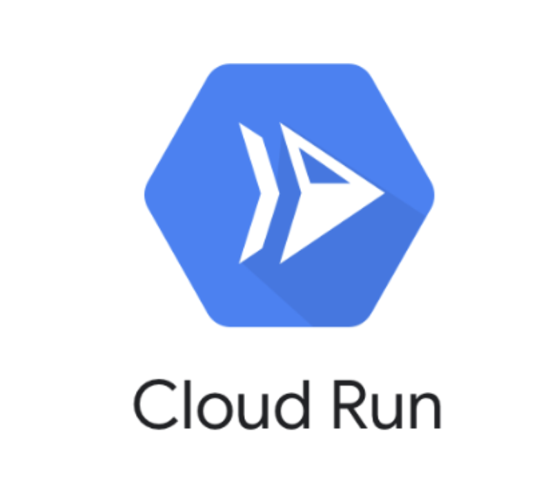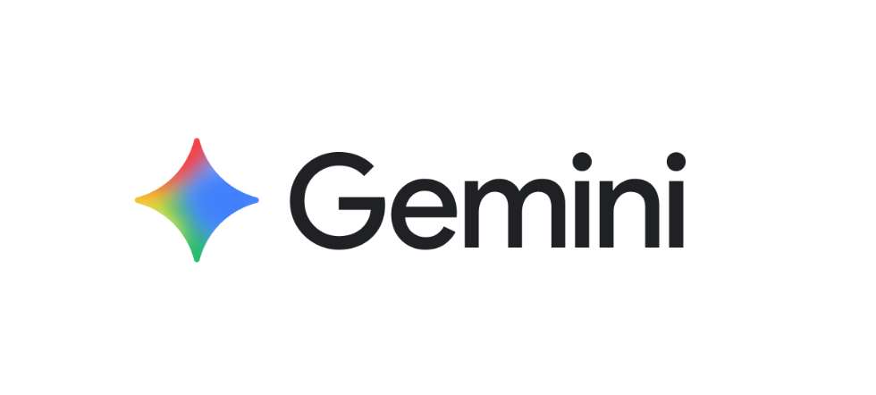
Last Updated: 2025-09-30
What makes this project powerful is the combination of Python, Cloud Run, and Gemini. Together, they let you build intelligent, serverless applications that can process data and generate insights automatically.
Cloud Run is a fully managed compute platform that runs your containers without you needing to manage servers. You package your Python app in a container, deploy it, and Cloud Run handles scaling up when requests increase, down to zero when idle. This makes it ideal for event-driven or API-driven workloads, where flexibility and cost efficiency are critical.
Python is one of the most versatile programming languages today. It's simple, readable, and has a rich ecosystem of libraries for web services, data processing, and AI integrations. In this codelab, Python acts as the glue—it listens for incoming events, calls the Gemini API, processes results, and pushes data to storage. If you already know Python, you're well on your way to building powerful serverless AI applications.
Gemini is Google's latest family of generative AI models, designed for text understanding, reasoning, and creation. With Gemini, you can summarise content, classify text, extract meaning, and generate human-like responses. In this codelab, Gemini will analyse incoming text and produce concise summaries, along with structured insights like sentiment and priority levels.
Gemini turns unstructured text into actionable knowledge. Combined with Python and Cloud Run, you can build smart, scalable apps without worrying about infrastructure.
In this codelab, you will build a Ticket Summarizer application. Your app will:
This codelab focuses on the fundamentals of connecting Python services with Cloud Run and Gemini. Non-relevant setup steps (e.g., container boilerplate) are provided so you can copy and paste, keeping the focus on integrating these technologies.
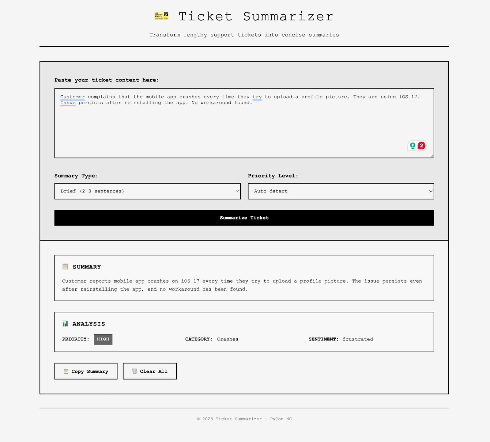
gcloud auth list
gcloud config list project
gcloud config set project <YOUR_PROJECT_ID>
An API key is an encrypted string that you can use when calling Google Cloud APIs. You can create and manage all your Gemini API Keys from the Google AI Studio API Keys page.
Our frontend is a simple input form for this codelab. The code has already been prepared and overly simplified to demonstrate only the concepts needed for this lab, and it offers minimal error handling. If you choose to reuse any of this code in a production application, make sure to handle any errors and thoroughly test all the code.
To set up the frontend, we will use the Cloud Shell Editor. This is a browser-based IDE that's fully integrated into Google Cloud. To launch the editor, click Open Editor on the toolbar of the Cloud Shell window.
On launching the editor:
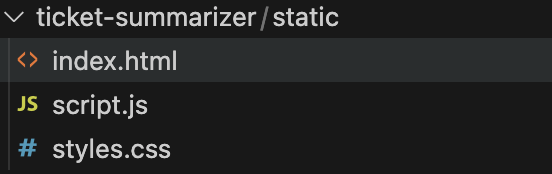
<!doctype html>
<html lang="en">
<head>
<meta charset="UTF-8" />
<meta name="viewport" content="width=device-width, initial-scale=1.0" />
<title>Ticket Summarizer</title>
<link rel="stylesheet" href="styles.css" />
</head>
<body>
<div class="container">
<header class="header">
<h1>🎫 Ticket Summarizer</h1>
<p class="subtitle">
Transform lengthy support tickets into concise summaries
</p>
</header>
<main class="main-content">
<div class="input-section">
<div class="input-group">
<label for="ticketInput"
>Paste your ticket content here:</label
>
<textarea
id="ticketInput"
placeholder="Enter ticket details, customer messages, or support conversations..."
rows="10"
></textarea>
</div>
<div class="options-group">
<div class="option">
<label for="summaryType">Summary Type:</label>
<select id="summaryType">
<option value="brief">
Brief (2-3 sentences)
</option>
<option value="detailed">
Detailed (paragraph)
</option>
<option value="bullet">Bullet Points</option>
</select>
</div>
<div class="option">
<label for="priority">Priority Level:</label>
<select id="priority">
<option value="auto detect">Auto-detect</option>
<option value="low">Low</option>
<option value="medium">Medium</option>
<option value="high">High</option>
<option value="urgent">Urgent</option>
</select>
</div>
</div>
<button id="summarizeBtn" class="btn btn-primary">
<span class="btn-text">Summarize Ticket</span>
<div class="spinner" style="display: none"></div>
</button>
</div>
<div class="output-section" style="display: none">
<div class="summary-card">
<h3>📋 Summary</h3>
<div id="summaryOutput" class="summary-content"></div>
</div>
<div class="metadata-card">
<h3>📊 Analysis</h3>
<div class="metadata-grid">
<div class="metadata-item">
<span class="label">Priority:</span>
<span
id="detectedPriority"
class="value priority-badge"
></span>
</div>
<div class="metadata-item">
<span class="label">Category:</span>
<span id="category" class="value"></span>
</div>
<div class="metadata-item">
<span class="label">Sentiment:</span>
<span id="sentiment" class="value"></span>
</div>
</div>
</div>
<div class="actions">
<button id="copyBtn" class="btn btn-secondary">
📋 Copy Summary
</button>
<button id="clearBtn" class="btn btn-outline">
🗑️ Clear All
</button>
</div>
</div>
</main>
<footer class="footer">
<p>© 2025 Ticket Summarizer - PyCon NG</p>
</footer>
</div>
<div id="toast" class="toast" style="display: none"></div>
<script src="script.js"></script>
</body>
</html>
* {
margin: 0;
padding: 0;
box-sizing: border-box;
}
body {
font-family: "Courier New", Monaco, "Lucida Console", monospace;
line-height: 1.5;
color: #000;
background: #f5f5f5;
min-height: 100vh;
}
.container {
max-width: 1200px;
margin: 0 auto;
padding: 20px;
}
.header {
text-align: center;
margin-bottom: 40px;
color: #000;
border-bottom: 2px solid #000;
padding-bottom: 20px;
}
.header h1 {
font-size: 2.5rem;
font-weight: normal;
margin-bottom: 10px;
letter-spacing: 2px;
}
.subtitle {
font-size: 1rem;
font-weight: normal;
}
.main-content {
background: #f5f5f5;
border: 2px solid #000;
overflow: hidden;
}
.input-section {
padding: 40px;
background: #e8e8e8;
border-bottom: 2px solid #000;
}
.input-group {
margin-bottom: 30px;
}
.input-group label {
display: block;
margin-bottom: 10px;
font-weight: bold;
color: #000;
font-size: 1rem;
}
#ticketInput {
width: 100%;
padding: 15px;
border: 2px solid #000;
font-size: 0.9rem;
font-family: "Courier New", Monaco, "Lucida Console", monospace;
resize: vertical;
background: #f5f5f5;
color: #000;
}
#ticketInput:focus {
outline: none;
background: #e0e0e0;
}
.options-group {
display: grid;
grid-template-columns: repeat(auto-fit, minmax(200px, 1fr));
gap: 20px;
margin-bottom: 30px;
}
.option label {
display: block;
margin-bottom: 8px;
font-weight: bold;
color: #000;
}
.option select {
width: 100%;
padding: 12px;
border: 2px solid #000;
font-size: 0.9rem;
font-family: "Courier New", Monaco, "Lucida Console", monospace;
background: #f5f5f5;
cursor: pointer;
color: #000;
}
.option select:focus {
outline: none;
background: #e0e0e0;
}
.btn {
padding: 12px 24px;
border: 2px solid #000;
font-size: 0.9rem;
font-weight: bold;
font-family: "Courier New", Monaco, "Lucida Console", monospace;
cursor: pointer;
display: inline-flex;
align-items: center;
gap: 8px;
text-decoration: none;
background: #f5f5f5;
color: #000;
transition: all 0.2s ease;
}
.btn:disabled {
cursor: not-allowed;
opacity: 0.5;
}
.btn-primary {
background: #000;
color: #fff;
width: 100%;
justify-content: center;
}
.btn-primary:hover:not(:disabled) {
background: #333;
}
.btn-secondary {
background: #f5f5f5;
color: #000;
}
.btn-secondary:hover {
background: #e0e0e0;
}
.btn-outline {
background: #f5f5f5;
color: #000;
}
.btn-outline:hover {
background: #000;
color: #f5f5f5;
}
.spinner {
width: 16px;
height: 16px;
border: 2px solid #666;
border-radius: 50%;
border-top-color: #fff;
animation: spin 1s linear infinite;
}
@keyframes spin {
to {
transform: rotate(360deg);
}
}
.output-section {
padding: 40px;
background: #f5f5f5;
}
.summary-card,
.metadata-card {
margin-bottom: 30px;
padding: 20px;
border: 2px solid #000;
background: #f8f8f8;
}
.summary-card h3,
.metadata-card h3 {
margin-bottom: 15px;
color: #000;
font-size: 1.1rem;
font-weight: bold;
text-transform: uppercase;
letter-spacing: 1px;
}
.summary-content {
font-size: 0.9rem;
line-height: 1.6;
color: #000;
font-family: "Courier New", Monaco, "Lucida Console", monospace;
white-space: pre-wrap;
}
.metadata-grid {
display: grid;
grid-template-columns: repeat(auto-fit, minmax(200px, 1fr));
gap: 15px;
}
.metadata-item {
display: flex;
align-items: center;
gap: 10px;
font-size: 0.9rem;
}
.label {
font-weight: bold;
color: #000;
text-transform: uppercase;
min-width: 80px;
}
.value {
color: #000;
font-weight: normal;
}
.priority-badge {
padding: 4px 8px;
font-size: 0.8rem;
font-weight: bold;
text-transform: uppercase;
letter-spacing: 1px;
border: 1px solid #000;
}
.priority-low {
background: #f5f5f5;
color: #000;
}
.priority-medium {
background: #ccc;
color: #000;
}
.priority-high {
background: #666;
color: #fff;
}
.priority-urgent {
background: #000;
color: #fff;
animation: blink 1s infinite;
}
@keyframes blink {
0%,
50% {
opacity: 1;
}
51%,
100% {
opacity: 0.5;
}
}
.actions {
display: flex;
gap: 15px;
flex-wrap: wrap;
margin-top: 20px;
}
.toast {
position: fixed;
top: 20px;
right: 20px;
padding: 12px 16px;
border: 2px solid #000;
color: #000;
background: #f5f5f5;
font-weight: bold;
font-family: "Courier New", Monaco, "Lucida Console", monospace;
font-size: 0.9rem;
z-index: 1000;
text-transform: uppercase;
}
.toast-success {
background: #f5f5f5;
border-color: #000;
}
.toast-error {
background: #000;
color: #fff;
border-color: #000;
}
.toast-info {
background: #e0e0e0;
border-color: #000;
}
.footer {
text-align: center;
margin-top: 40px;
color: #666;
font-size: 0.8rem;
border-top: 1px solid #ccc;
padding-top: 20px;
}
@media (max-width: 768px) {
.container {
padding: 10px;
}
.header h1 {
font-size: 1.8rem;
}
.input-section,
.output-section {
padding: 20px;
}
.options-group {
grid-template-columns: 1fr;
gap: 15px;
}
.actions {
flex-direction: column;
}
.btn {
width: 100%;
justify-content: center;
}
.metadata-grid {
grid-template-columns: 1fr;
}
.toast {
right: 10px;
left: 10px;
width: auto;
}
}
class TicketSummarizer {
constructor() {
this.initializeElements();
this.bindEvents();
}
initializeElements() {
this.ticketInput = document.getElementById("ticketInput");
this.summaryType = document.getElementById("summaryType");
this.priority = document.getElementById("priority");
this.summarizeBtn = document.getElementById("summarizeBtn");
this.outputSection = document.querySelector(".output-section");
this.summaryOutput = document.getElementById("summaryOutput");
this.detectedPriority = document.getElementById("detectedPriority");
this.category = document.getElementById("category");
this.sentiment = document.getElementById("sentiment");
this.copyBtn = document.getElementById("copyBtn");
this.clearBtn = document.getElementById("clearBtn");
this.toast = document.getElementById("toast");
this.spinner = document.querySelector(".spinner");
this.btnText = document.querySelector(".btn-text");
}
bindEvents() {
this.summarizeBtn.addEventListener("click", () => this.summarizeTicket());
this.copyBtn.addEventListener("click", () => this.copySummary());
this.clearBtn.addEventListener("click", () => this.clearAll());
}
async summarizeTicket() {
const ticketText = this.ticketInput.value.trim();
if (!ticketText) {
this.showToast("Please enter ticket content to summarize", "error");
return;
}
this.setLoading(true);
try {
const summary = await this.getSummary(ticketText);
this.displayResults(summary);
this.showToast("Ticket summarized successfully!", "success");
} catch (error) {
this.showToast("Error processing ticket. Please try again.", "error");
console.error("Summarization error:", error);
} finally {
this.setLoading(false);
}
}
async getSummary(ticketText) {
const data = {
content: ticketText,
summary_type: this.summaryType.value.trim(),
priority: this.priority.value.trim(),
};
const req = await fetch("/api/summarize", {
method: "POSt",
headers: { "Content-Type": "application/json" },
body: JSON.stringify(data),
});
const res = await req.json();
return res;
}
displayResults(result) {
this.summaryOutput.innerHTML = result.summary.replace(/\n/g, "<br>");
this.detectedPriority.textContent = result.priority;
this.detectedPriority.className = `value priority-badge priority-${result.priority}`;
this.category.textContent = result.category;
this.sentiment.textContent = result.sentiment;
this.outputSection.style.display = "block";
this.outputSection.scrollIntoView({ behavior: "smooth" });
}
async copySummary() {
try {
const summaryText = this.summaryOutput.textContent;
await navigator.clipboard.writeText(summaryText);
this.showToast("Summary copied to clipboard!", "success");
} catch (error) {
this.showToast("Failed to copy to clipboard", "error");
}
}
clearAll() {
this.ticketInput.value = "";
this.outputSection.style.display = "none";
this.summaryType.selectedIndex = 0;
this.priority.selectedIndex = 0;
this.showToast("Form cleared", "info");
}
setLoading(isLoading) {
if (isLoading) {
this.spinner.style.display = "inline-block";
this.btnText.textContent = "Processing...";
this.summarizeBtn.disabled = true;
} else {
this.spinner.style.display = "none";
this.btnText.textContent = "Summarize Ticket";
this.summarizeBtn.disabled = false;
}
}
showToast(message, type = "info") {
this.toast.textContent = message;
this.toast.className = `toast toast-${type}`;
this.toast.style.display = "block";
setTimeout(() => {
this.toast.style.display = "none";
}, 3000);
}
}
// Initialize the application
document.addEventListener("DOMContentLoaded", () => {
new TicketSummarizer();
});
At this point, we have successfully bootstrapped the frontend side of things. To verify the setup, we can preview the current application.
cd text-summarizer/static
python -m http.server 8080
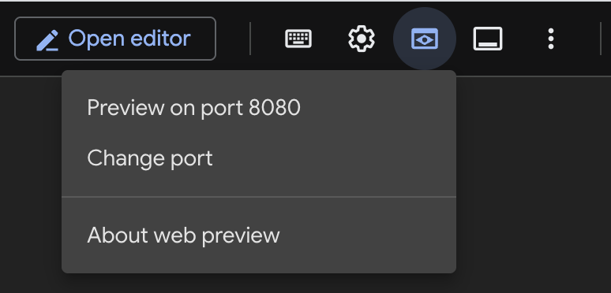
A new tab should open up with a preview of the Frontend looking like the following. You might have to edit the preview URL, removing every query parameter (e.g ?authuser=0) so as to show the right page.
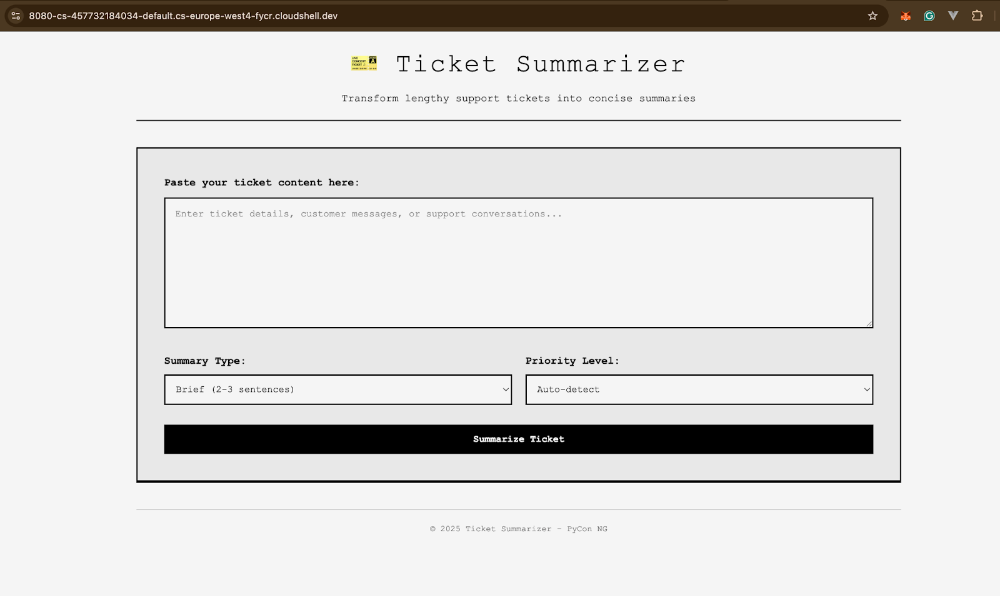
Good Job! Now that we have successfully built the frontend, we can focus on the main parts: integrating Gemini using Python.
Now that you've seen how the pieces fit together, it's time to build the backend service that powers your AI ticket summarizer. The backend will handle incoming requests, call the Gemini API through the GenAI SDK, and return the results in a clean, structured format.
To keep things simple and familiar, we'll use Flask, a lightweight Python web framework that makes it easy to create REST APIs. Flask allows us to define endpoints, accept JSON input, and return AI-generated summaries and metadata as JSON responses.
Flask turns your Python functions into HTTP endpoints with just a few lines of code. In this codelab, you'll create a /api/summarize endpoint that accepts ticket content, sends it to Gemini, and responds with a summary, sentiment, and priority. This abstraction keeps the Gemini integration clean and makes it reusable across different parts of the application.
The Generative AI SDK provides a simple interface for calling Gemini models. Instead of writing raw API requests, you'll use high-level methods to send prompts and retrieve responses. This reduces boilerplate, handles authentication, and ensures consistent integration across all platforms. Together, Flask and the GenAI SDK create a backend that is:
Modular – a REST API that other services or UIs can consume.
Reusable – once built, any client (web, mobile, Cloud Run service) can call it.
Extensible – you can easily add new endpoints or enrich outputs with more AI features.
By the end of this section, you'll have a working backend that bridges your ticket data and Gemini, ready to be deployed on Cloud Run. Steps are described below.
Back in the Cloud Shell Editor, create app.py and requirements.txt files. These files will be used for the backend implementation and managing dependencies, respectively. The resulting project structure should look like the following:
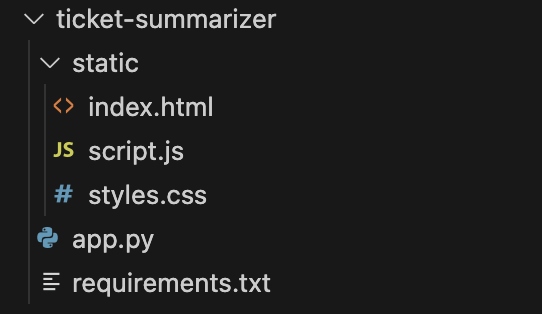
In the requirements.txt file, list the required dependencies for this project
Flask~=3.1.2
google-genai~=1.39.1
Open the Cloud editor Terminal. This is similar to Cloud Shell, but it is integrated within the Cloud Editor. This way, we do not have to switch between Cloud Shell and Cloud Editor to switch commands. Click the Terminal button at the top left menu and then select New Terminal
In the newly opened Terminal, run the following commands. At this point, we will integrate the Gemini API Key we created earlier on
# Ensure your project is correctly set gcloud config set project <YOUR_PROJECT_ID> # Add your Gemini Key as an env variable export GEMINI_API_KEY=<YOUR_GEMINI_API_KEY>
Install the backend dependencies as declared in the requirements.txt file.
pip install -r requirements.txt
import os
from flask import Flask, request
from google import genai
app = Flask(__name__,static_folder="static",static_url_path="",template_folder="static")
if not os.getenv("GEMINI_API_KEY"):
print("GEMINI_API_KEY env is required")
exit()
gemini = genai.Client(api_key=os.getenv("GEMINI_API_KEY"))
The above snippet creates a new Flask instance; the (static_folder="static") is used to tell Flask to serve static files (HTML, CSS, Images, etc.) from the static folder (which you should already have by now). The Gen-AI client is also initialised with a minimal validation to ensure the GEMINI_API_KEY is provided before initialising the client.
import os
from flask import Flask, request
from flask.templating import render_template
from typing import Any, Dict
from google import genai
import re
import json
app = Flask(__name__,static_folder="static",static_url_path="",template_folder="static")
if not os.getenv("GEMINI_API_KEY"):
print("GEMINI_API_KEY env is required")
exit()
client = genai.Client(api_key=os.getenv("GEMINI_API_KEY"))
@app.get("/")
def index_page(): return render_template('index.html')
@app.post("/api/summarize")
def summarize():
"""
Summarizes a ticket
"""
data: Any = request.json
summary = get_summary(data.get("content"),data.get("summary_type"),data.get("priority"))
return summary
At this point, we have now declared all routes. In the summarise handler, we make use of the Flask request instance to access the JSON content sent in the request body. The final part of this backend involves the AI summary functionality.
def get_summary(content:str, format: str, priority:str):
prompt = f'''
You are a support assistant tasked with summarizing tickets.
Here is the ticket content:
{content}
The summary input should follow these rules:
- Format: {format} (options: brief, detailed, or bullet points).
- Priority: {priority} (options: urgent, high, medium, low, or auto detect).
- If "auto detect," infer the priority based on urgency, impact, and customer sentiment.
Instructions:
1. Focus only on the key issue(s), relevant context, and any actions taken or requested.
2. Be concise, clear, and avoid unnecessary repetition.
3. If priority is auto-detected, state the detected priority.
4. Ensure the summary is ready for quick triage by support teams.
5. Determine an appropriate [SENTIMENT] from the following list (positive: [happy, excellent, good, pleased, satisfies], negative: [angry, frustrated, terrible, awful, disappointed])
6. Determine an appropriate one word [CATEGORY]
provide the summary as a raw JSON object. The structure of the JSON should be the following:
{{
"summary": "[SUMMARY]",
"category":"[CATEGORY]",
"sentiment":"[SENTIMENT]",
"priority": "[PRIORITY]"
}}
'''
response = client.models.generate_content(
model="gemini-2.5-flash",
contents=prompt,
)
return extract_json(response.text)
By merging all snippets, we arrive at a fully implemented AI summarizer exposed via a REST API
import os
from flask import Flask, request
from flask.templating import render_template
from typing import Any, Dict
from google import genai
import re
import json
app = Flask(__name__,static_folder="static",static_url_path="",template_folder="static")
if not os.getenv("GEMINI_API_KEY"):
print("GEMINI_API_KEY env is required")
exit()
client = genai.Client(api_key=os.getenv("GEMINI_API_KEY"))
@app.get("/")
def index_page(): return render_template('index.html')
@app.post("/api/summarize")
def summarize():
"""
Summarizes a ticket
"""
data: Any = request.json
summary = get_summary(data.get("content"),data.get("summary_type"),data.get("priority"))
return summary
def get_summary(content:str, format: str, priority:str):
prompt = f'''
You are a support assistant tasked with summarizing tickets.
Here is the ticket content:
{content}
The summary input should follow these rules:
- Format: {format} (options: brief, detailed, or bullet points).
- Priority: {priority} (options: urgent, high, medium, low, or auto detect).
- If "auto detect," infer the priority based on urgency, impact, and customer sentiment.
Instructions:
1. Focus only on the key issue(s), relevant context, and any actions taken or requested.
2. Be concise, clear, and avoid unnecessary repetition.
3. If priority is auto-detected, state the detected priority.
4. Ensure the summary is ready for quick triage by support teams.
5. Determine an appropriate [SENTIMENT] from the following list (positive: [happy, excellent, good, pleased, satisfies], negative: [angry, frustrated, terrible, awful, disappointed])
6. Determine an appropriate one word [CATEGORY]
provide the summary as a raw JSON object. The structure of the JSON should be the following:
```
{{
"summary": "[SUMMARY]",
"category":"[CATEGORY]",
"sentiment":"[SENTIMENT]",
"priority": "[PRIORITY]"
}}
```
'''
response = client.models.generate_content(
model="gemini-2.5-flash",
contents=prompt,
)
return extract_json(response.text)
def extract_json(blob: str | None)->Dict:
if not blob: return {}
json_match = re.search(r"```json\s*(.*?)\s*```", blob, re.DOTALL)
if json_match:
extracted_json_str = json_match.group(1)
return json.loads(extracted_json_str)
else:
print("No JSON found within ```json``` markers.")
return {}In the next section, we shall test all that we have written.
To test all we've done so far, we will use a Flask development server
# Re-declare the Gemini API just in case export GEMINI_API_KEY=YOUR_GEMINI_API_KEY # Run the Flask development server flask run --host 0.0.0.0 -p 8080
If this goes successfully, you should see something like the following.
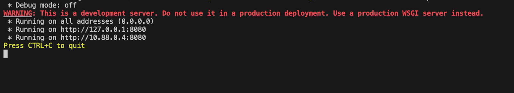
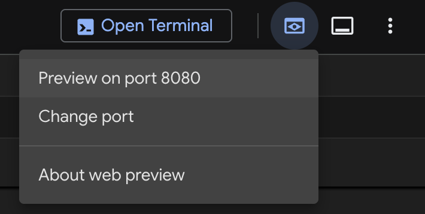
"Customer complains that the mobile app crashes every time they try to upload a profile picture. They are using iOS 17. The issue persists after reinstalling the app. No workaround found."
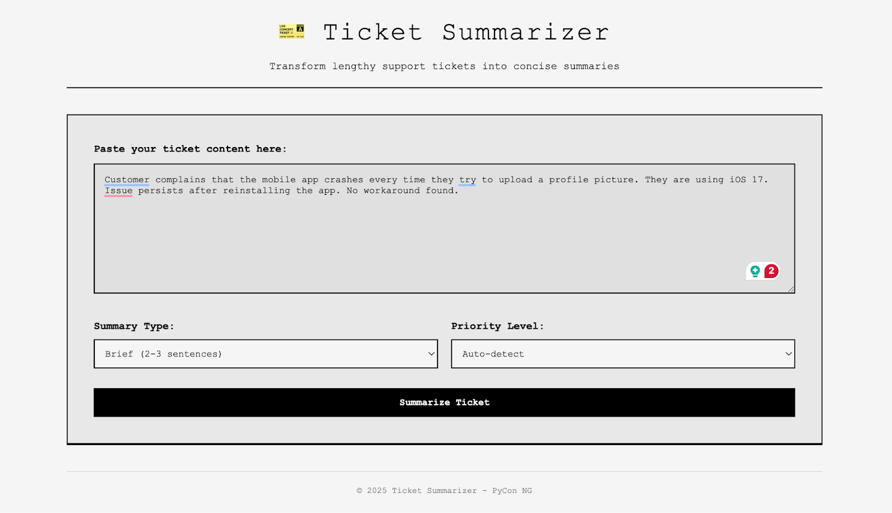
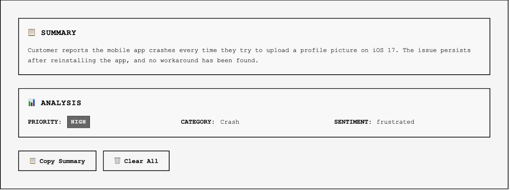
If you've gotten to this point, congratulations! In the next Section, we'll deploy this application to Cloud Run.
Having successfully built and tested the app, let's see how we can deploy the application and make it publicly accessible. For this, we will use Cloud Run, a managed production-ready, easy-to-use service. Cloud Run allows you, the developer, to either provide the source code for your application or a Docker image. For this codelab (and most workflows), we will use the Docker image option. The process involves:
To ensure a reliable deployment pipeline, we will utilise Cloud Build, a CI/CD platform provided by Google Cloud, which seamlessly integrates with all our existing work. Firstly, enable the necessary APIs.
Dockerfile in the project root directory with the following.FROM python:3.13-alpine # switch working directory WORKDIR /app # copy the requirements file into the image COPY ./requirements.txt . # install the dependencies and packages in the requirements file RUN pip install -r requirements.txt && pip install gunicorn # copy every content from the local file to the image COPY . . CMD ["gunicorn","-b","0.0.0.0:8080","app:app"]
cloudbuild.yaml file in the project root directory. This will contain the build steps used by Cloud Build for deployments.steps:
- name: gcr.io/cloud-builders/docker
args:
- build
- -t
- us-central1-docker.pkg.dev/$PROJECT_ID/$_REPO_NAME/app:$BUILD_ID
- .
- name: gcr.io/cloud-builders/docker
args:
- push
- "us-central1-docker.pkg.dev/$PROJECT_ID/$_REPO_NAME/app:$BUILD_ID"
- name: gcr.io/google.com/cloudsdktool/cloud-sdk
entrypoint: gcloud
args:
- run
- deploy
- ticket-summarizer
- --image
- us-central1-docker.pkg.dev/$PROJECT_ID/$_REPO_NAME/app:$BUILD_ID
- --region
- us-central1
- --set-env-vars
- GEMINI_API_KEY=$_GEMINI_API_KEY
images:
- us-central1-docker.pkg.dev/$PROJECT_ID/$_REPO_NAME/app:$BUILD_ID
ticket-summarizergcloud artifacts repositories create ticket-summarizer --repository-format=docker --location=us-central1
YOUR_GEMINI_API_KEY placeholder with your Gemini API Key.gcloud builds submit \ --substitutions "_GEMINI_API_KEY=YOUR_GEMINI_API_KEY,_REPO_NAME=ticket-summarizer"
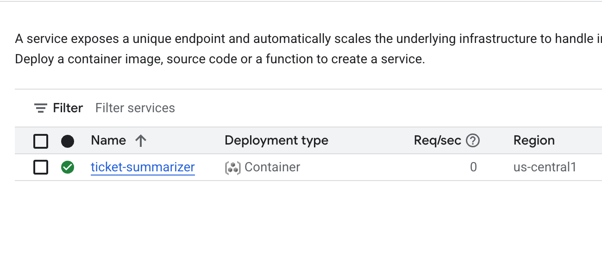
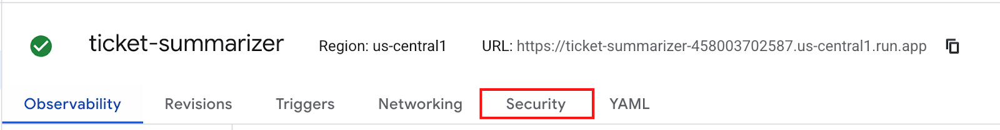
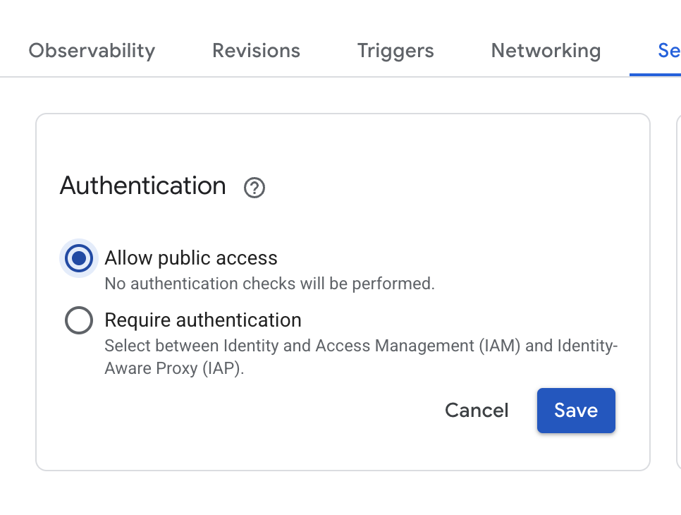
Congratulations, you've successfully built and deployed an AI-powered Ticket Summarizer 🎉
You created a smart backend using the Gen-AI SDK, containerised this application and deployed it to Cloud Run using Cloud Build..
You now know the key steps required to build and deploy simple AI-powered apps!
Extend the app to: